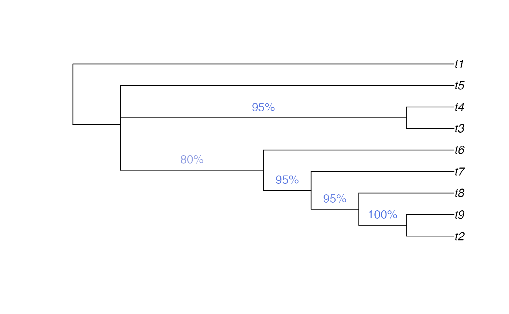
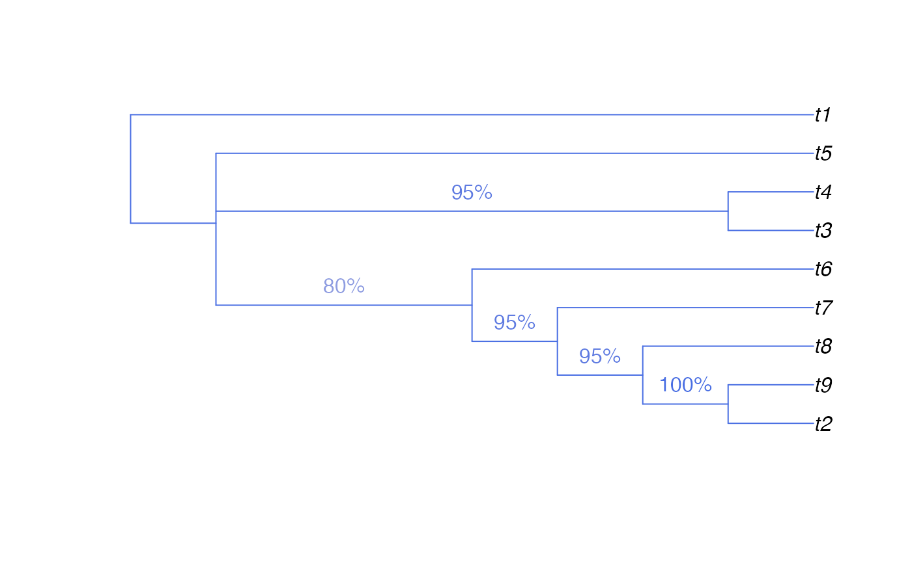

SplitFrequency() provides a simple way to count the number of times that
bipartition splits, as defined by a reference tree, occur in a forest of
trees. May be used to calculate edge ("node") support for majority consensus
or bootstrap trees.
SplitFrequency(reference, forest)
SplitNumber(tips, tree, tipIndex, powersOf2)
ForestSplits(forest, powersOf2)
TreeSplits(tree)A tree of class phylo, a Splits object.
a list of trees of class phylo, or a multiPhylo object; or a
Splits object. See
vignette for
possible methods of loading trees into R.
Integer vector specifying the tips of the tree within the chosen split.
A tree of class phylo.
Character vector of tip names, in a fixed order.
Integer vector of same length as tipIndex, specifying a
power of 2 to be associated with each tip in turn.
SplitFrequency() returns the number of trees in forest that
contain each split in reference.
If reference is a tree of class phylo, then the sequence will correspond
to the order of nodes (use ape::nodelabels() to view).
Note that the three nodes at the root of the tree correspond to a single
split; see the example for how these might be plotted on a tree.
If multiple calculations are required, some time can be saved by using the constituent functions (see examples)
SplitNumber(): Assign a unique integer to each split
ForestSplits(): Frequency of splits in a given forest of trees
TreeSplits(): Deprecated. Listed the splits in a given tree.
Use as.Splits instead.
Other Splits operations:
LabelSplits(),
NSplits(),
NTip(),
PolarizeSplits(),
Splits,
SplitsInBinaryTree(),
TipLabels(),
TipsInSplits(),
match.Splits,
xor()
# An example forest of 100 trees, some identical
forest <- as.phylo(c(1, rep(10, 79), rep(100, 15), rep(1000, 5)), nTip = 9)
# Generate an 80% consensus tree
cons <- ape::consensus(forest, p = 0.8)
plot(cons)

# Calculate split frequencies
splitFreqs <- SplitFrequency(cons, forest)
# Optionally, colour edges by corresponding frequency.
# Note that not all edges are associated with a unique split
# (and two root edges may be associated with one split - not handled here)
edgeSupport <- rep(1, nrow(cons$edge)) # Initialize trivial splits to 1
childNode <- cons$edge[, 2]
edgeSupport[match(names(splitFreqs), childNode)] <- splitFreqs / 100
plot(cons, edge.col = SupportColour(edgeSupport), edge.width = 3)
# Annotate nodes by frequency
LabelSplits(cons, splitFreqs, unit = "%",
col = SupportColor(splitFreqs / 100),
frame = "none", pos = 3L)
